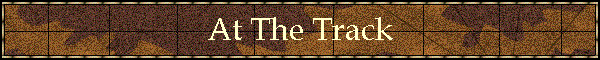

|

|
|
|
Pedlines readers who have followed "Gordo" for the past two years will be glad to hear he's working at Santa Anita and that we are saving our pennies for his long delayed debut...
Pedigrees are the last handicapping frontier, and recent Horses To Watch winners are... Authentic Caller - Aqueduct - $20.40 $6.80 $4.30 Gold Dollar - Saratoga - $23.20 $8.30 $5.00 Western Pride - Mountaineer (West Virginia Derby) - $45.60 $17.20 $7.00 Come On Sparkplug - Philadelphia Park - $4.20 $3.00 $2.20
Fifty Stars - Associated Press Photo by Bill Haber Earlier Horse To Watch Fifty Stars winning G2 Louisiana Derby - $43.00, $13.40, $7.40 "Every time you get a taste of something like that, it makes you want to go back. I've compared every baby I've galloped this year to (Fifty Stars). I think when you have the number of quality maiden winners we have that it is very realistic for me to think that a couple of them are special -- and they are." --Trainer Steve Asmussen, November 2001
STAKES WATCH Chaste (Cozzene--Purity, Fappiano) ran a creditable third in the G3 Ballston Spa on August 12th. Filly has good connections and a good Caro/Mr. Prospector cross (Tartan cross, actually -- Cozzene/Fappiano). She'll be heard from, hopefully at a price. Dayton Flyer (Honour and Glory--) was wide and tired in the G2 National Museum Racing Hall of Fame. This is a better colt than that, and if he gets any sort of time off look for him to be dangerous fresh. 8/25/01: Dropped into an allowance race at Saratoga, finishing second and returning a respectable $8.30, $4.20. Falcon Flight impressed us with his gameness at Del Mar on August 25th. Although he had to settle for fourth, we plan to follow him for awhile and, perhaps, get a good price in the process. Marine (Marju--Ivorine, Blushing Groom) acted like he needed a race in Santa Anita's Sir Beaufort after nearly four months off. This well-bred grass specialist has won at Santa Anita and, coming out of Bobby Frankel's barn, has every right to improve off that effort. Scorpion (Seattle Slew--Petiteness, Chief's Crown) is one we liked early on, but overall has been a disappointment. He's pretty sour right now with big-time losses in a pair of Grade 1's (Jockey Club Gold Cup at Belmont and Malibu at Santa Anita). So what's to watch for? It's called grass, something Scorpion has never been on. We don't think you'll see the real Scorpion until Mr. Lukas tries him on the green. Thunder Blitz (Holy Bull--Rasant, Assert {Ire}) looked like a horse who needed a race in July 15th Long Branch at Monmouth. Deserves solid support while getting back on track. 8/11/01: We didn't mind him finishing third in the West Virginia Derby (see Western Pride), and will stay with him for awhile. Western Pride (Way West--Strongerthanpride, Proud Birdie) didn't surprise us finishing second at 21-1 in the G3 Round Table at Arlington, we thought he'd win. This three-year-old has the powerful Round Table--Hail To Reason cross in his fourth generation, and that's all you need to know to back this colt. 8/11/01: Don't say we didn't warn you as this colt came back to WIN the West Virginia Derby and paid $45.60, $17.20, $7.00. Chris Lincoln said it was a "shocker"; maybe Chris needs some pedigree lessons...
OTHERS TO WATCH Austinpower (Sunday Silence--Eishin Austin) - A rare Sunday Silence in the U.S., this first time starter was blocked at a critical time at Gulfstream in 1/27 MSW event (1-1/8 on the turf), but still finished third. We expect to see a maiden breaking effort soon. Authentic Caller (Caller I. D.--Authentic Heroine, Palace Music) Dubai Visit - This California based two year (now three) old filly (Quiet American-Furajet) was sixth at Santa Anita 10/26 in the Hidden Light, a mile on the grass. We're not surprised. She figures to be a dirt sprinter, not a turf miler. Follow her accordingly. Fictitious Couldn't handle the Perfect Sting-License Fee exacta on 9/4 in Saratoga's G-2 Diana Handicap; same duo who beat her in Belmont's Beaugay in May. But this was her first start since that race; well-bred filly will come around. For Granted (Affirmed--Presume, Nijinsky II) Glory Glory (Honour and Glory--Gwenjinsky, Seattle Dancer) Gold Dollar (Seattle Slew--Miss Prospector, Crafty Prospector) Grifter (Maria's Mon--Blue Grass Field, Top Ville) - We like Gary Stevens, but from our viewpoint he discouraged this colt in his second grass try, the G3 Crown Royal at Churchill on May 4th. He had won his first grass race, but this second try found him tiring in the drive, presumably the result of Stevens not letting him have some rein. Maria's Mon is a hot sire anyway, but give this one another especially good look in next grass try. Kingsland (Mr. Prospector--Fit for a Queen, Fit to Fight) - Looked like the quality speed in G2 Demoiselle at Aqueduct on 11/25. Set early pace, passed by Sweep Dreams, fought back to retake lead. These two continued to battle while Two Item Limit swept by. Just missed Place photo, but we were impressed with gameness. Follow. Update 2/21/01: Pressured and faded in comebacker in Gulfstream allowance event. We'll give this one the benefit of the doubt and continue to follow. Lake Austin Storm Cat sophomore is out of one of our favorites, multiple G-1 winner Lakeway, and he almost upset the G-3 Saranac field at Saratoga on 9/3 at nearly 20-1 odds. Stay with him wherever he pops up. Ommadon (Grindstone--Missymooiloveou, Turkoman) - We took a liking to this colt as a two-year-old, expecting a big three-year-old campaign, and he did win his first sophomore effort ($3.60) on March 28th convincingly. But injuries have plagued him, and in late April it was revealed a hairline fracture of the pastern bone will sideline him for several months. We'll keep him here -- call it an act of faith -- and await his return. One Call Close Three-year-old colt (now four) last seen going 1-1/16 in Keeneland dirt stake. We like this Wolf Power-Doctor Pearl pedigree for a turf try. Pompeii (Broad Brush--Flying Heat, Private Account) - Beat herself in Aqueduct's G3 Next Move on March 31st. Unless there's a physical problem we look for her to make amends next out. Saarland (Unbridled--Versailles Treaty, Danzig) Specialexpectation (Valid Expectations--Could Be Special, Fappiano)) Tricky Elaine - 8/14 Lost all chance at start of G-2 Adirondack at Saratoga. Uncle Abbie (Kingmambo--Lassie Connection, Seattle Slew) - Full brother in blood to Lemon Drop Kid second best in Saratoga allowance at 9 furlongs on 9/4. Pulled up (DNF) in Keeneland stake 10/25/00. Resurfaced 5/19/01 in Churchill allowance event, finished off the board. We'll give him the benefit of this race and watch the next couple closely. (6/2 Churchill allowance off the board; only give one more chance).
ELLEN'S PEDIGREE ANALYSIS Malabar Gold (Unbridled--Stormy Spell There are several very interesting pedigree factors about Malabar Gold. First his dam, the Tsunami Slew mare Stormy Spell, is a 3/4 sister to Grade 1 winner Seattle Song. Secondly, he is bred on the same cross as Unbridled's Song. Unbridled's Song is, of course, also by Unbridled. Malabar Gold's dam, the above mentioned Stormy Spell, is a half sister to Lucky Spell, second dam of Unbridled's Song. This is the grand old family of Maggie B. B. Probably the most famous recent Fappiano relation to also hail from this family is Cryptoclearance. Malabar Gold has a three-way cross of the Humanity family via Case Ace/Sailing Home and Humane, the last two named via Tsunami Slew, who is himself inbred to this family. There is also a 7 x 5 cross of half sisters We Hail and Blessed Again (the *Clonaslee family) via My Dear Girl and Prince Blessed and a 6 x 7 cross of half sisters Miss Dogwood and Crepe Myrtle, both out of Myrtlewood. Myrtlewood's half sister, Black Curl, also appears in the pedigree of Seattle Slew via Jet Pilot. Obviously, there is still Unbridled's own double of Aspidistra and linebreeding to Plucky Liege via a variety of her sons and daughter *Marguerite de Valois and to *La Troienne via Bimelech x2/Businesslike in Unbridled's pedigree and through Baby League x2 in Seattle Slew's contribution. Malabar Gold comes by his nervous disposition honestly via broodmare sire Tsunami Slew who was once described as "a real bag of tricks" to train. However, he also picks up a great deal of his physical presence from this black beauty along with the general elegance of Unbridled's own offspring. The combination made for $1 million in the sales ring that looks like $1 million in person. This is one of the most striking looking young horses we've seen since one of his relations, Unbridled's Song, took the track. Of course he will only be another pretty face until he runs like he looks, but we can't help but hope that's sooner rather than later. Brown Eyed Lass (Known Fact--Targa) Targa has always occupied a special place in our hearts. The daughter of 1974 Kentucky Derby winner Cannonade is a half sister to Obeah, dam of Go For Wand and won the Grade 2 Santa Maria Handicap on her way to compiling a bankroll of $334,271. She also descends from the great Aloe family which has given us Gone West, Sharpen Up, Pebbles, Nashwan, Round Table and his full sister Monarchy and Sideral to name only a few. She also happens to belong to one of the nicest people the sport of horse racing will ever be able to boast as a supporter - John Forsythe. From the beginning Targa was bred to good stallions, but for a time her stakes placed filly Miss Evans (by Nijinsky II) was her only stakes produce. Then, moving away from the Northern Dancer line, she was bred to Copelan and produced multiple Grade 3 winner Mamselle Bebette, who was also Grade 1 placed in the Apple Blossom at Oaklawn. We always keep track of how Targa is doing and we were delighted to see that her 1997 filly by Known Fact, Brown Eyed Lass, recently broke her maiden. Delighted because we love Targa, yes, but also because Known Fact is one of our favorite mates for her. For starters, Brown Eyed Lass has a 3 x 2 cross of half sisters Mixed Marriage and Book of Verse, and some very interesting inbreeding to Rock Sand and Fairy Gold via a War Relic double and a cross of Man o' War. In the "standard patterns" category, there are also five crosses of Plucky Liege via a treble of *Bull Dog and a double of Bois Roussel and three Selene crosses via a *Pharamond II double and a cross of Hyperion We have frequently written in Pedlines that Friar Rock, broodmare sire of War Relic, is bred on an "inside out" pattern to Man o' War. In other words, Man o' War's sire Fair Play and Friar's Carse's sire Friar Rock are half brothers, both out of Fairy Gold. Man o' War is out of Mahubah by Rock Sand; Friar Rock is a son of Rock Sand. In War Relic, this pattern plays out 3 x 3 to both Fairy Gold and Rock Sand. When another cross of Man o' War is added, yet another cross of both Fairy Gold and Rock Sand is added. Thus, in this mating, there are five Fairy Gold and five Rock Sand crosses. Finally, there is a 6 x 7 x 8 cross of half sisters Lady Juror and Mumtaz Mahal. It's a pretty pedigree. Targa was 20 years old when this filly was born. But we're not one of those people who believes that an older mare cannot produce a good foal. In fact, we can't help but wonder if this new baby will be one of the best offspring Targa has foaled to date. This is an outstanding female family and can come up with the big horse at any time. Perhaps Targa will give us another Pebbles, another who was inbred to Aloe. We'll be watching.
SIRES TO WATCH Lord Avie & Cure The Blues are two old-timers whose stock consistently deliver on all surfaces and at all distances. A. P. Indy seems to get better with age. We do prefer his three-and-up runners to those being forced into a Triple Crown situation, although Aptitude was very impressive with his second to Red Bullet in the Gotham. Honour and Glory is one of our favorites (we first touted his pedigree in PEDLINES #1 back in 1995) who we thought would be a successful sire. He hasn't disappointed, in 2000 he was leading sire of 2-year-olds, leading first crop sire in both money and number of wins, and leading international first crop sire. Amazing how he suddenly got so popular. Lear Fan is one of the best turf sires in the country. Underrated. Maria's Mon is sending out some nice runners and producing some decent prices. Rubiano is picking up steam and seems to be a versatile sort. Devil's Bag has fallen from favor with breeders/sales, but most of them have talent. Island Whirl is a grossly underrated sire. He's a good 'money bet' stallion. We've seen some pricey results lately with several sires we like that seem to be hot these days. Accordingly, don't overlook Dare and Go, El Prado, Kingmambo, Phone Trick and Technology. |
Copyright © 2001 Ron & Ellen Parker
|